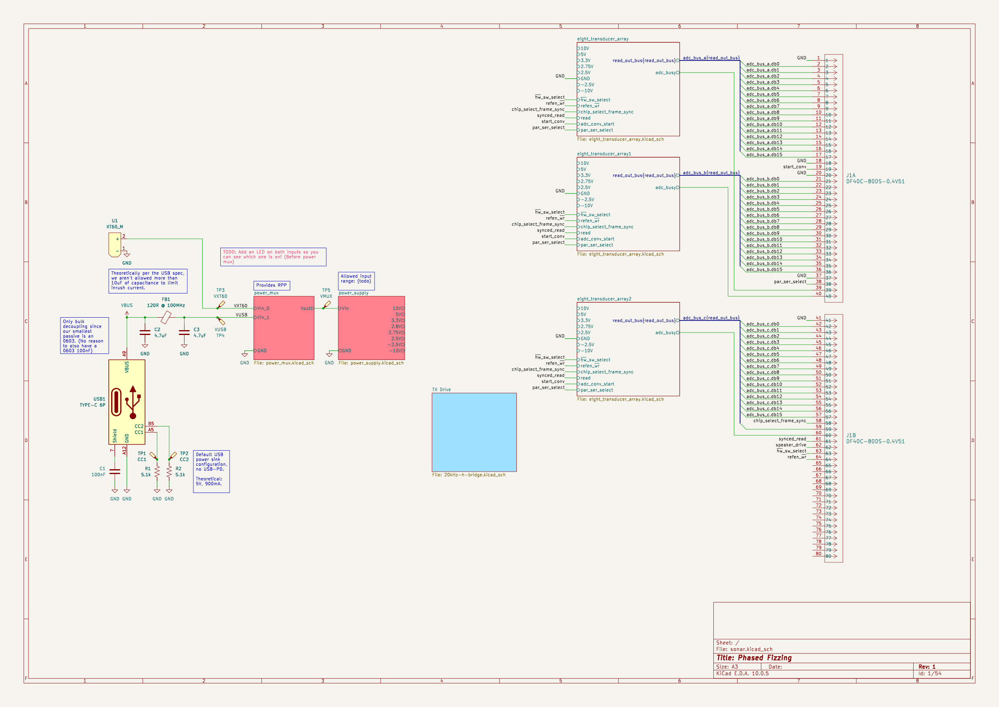
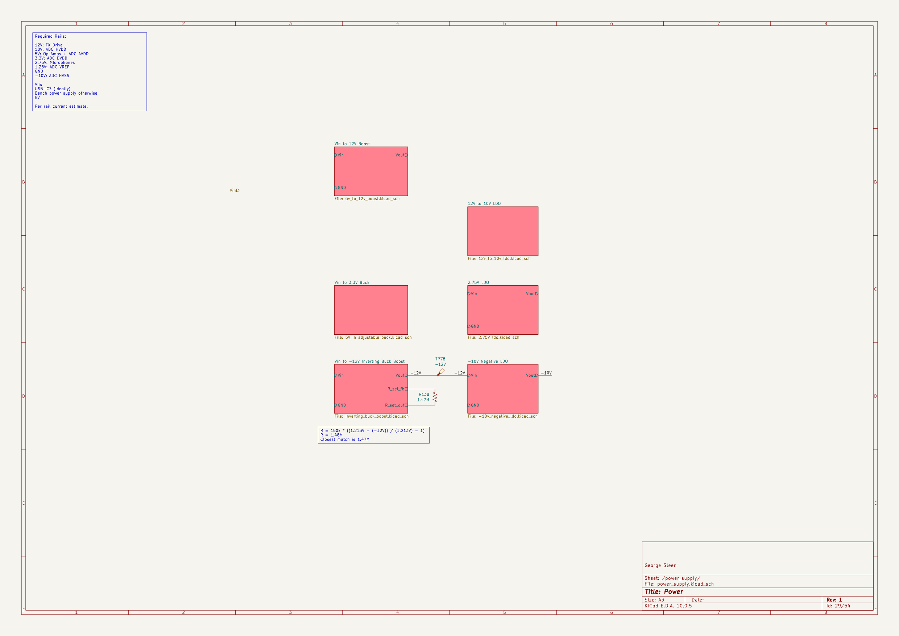

Phased Array Sonar

This is a custom ultrasonic sonar system that Josh Himmens and I are designing from scratch in KiCad. The board transmits and receives ultrasonic pulses through a phased array of piezoelectric transducers for object detection and distance measurement.
The project lives in a monorepo with the main board, a dev board for prototyping TX/RX circuitry, a shared KiCad component library, and a standalone SPICE simulation for the receive amplifier.
Transmit
I built the H-bridge driver circuit that generates the 20 kHz drive signals for the transducer array. The array uses Murata MA40S4S piezoelectric ultrasonic transducers (40 kHz, 10 mm diameter, 20 Vp-p max input). The top-level schematic instantiates the 8-element array three times, for 24 elements total.
Receive
Josh designed the RX chain. SPV0142LR5H-1 MEMS microphones (Knowles, analog omnidirectional) feed into a multi-stage amplifier. Each group of four MEMS mics connects to a quad pre-amplifier, and each element has its own RX amplifier channel. The pre-amp runs at a gain of 21 with a 120 MHz GBP op-amp.
A standalone SPICE simulation project (rx_amp_sim/) lets us iterate on the RX
amplifier design without dragging the full schematic into simulation.
Power tree
Power supply hierarchy:

I designed the full power tree. It supports two input sources through a power mux with ideal diode ORing:
- USB-C (5 V / 900 mA)
- XT60 connector (battery or bench supply)
From the input, the tree generates every rail the system needs: 5 V to 12 V boost (TPS55340), inverting buck-boost for a negative rail (TPS63700), 3.3 V adjustable buck for digital logic, negative 10 V LDO (LM337), 12 V to 10 V LDO, and a 2.75 V LDO.
The inverting buck-boost was the hardest part. The component calculations for
the inductor and feedback resistors took multiple iterations. I kept the old
revision (inverting_buck_boost_OLD.kicad_sch) alongside the current one
because my commit message at the time was "Do some more questionable math for
the inverting buck boost" and I wanted the reference.
Shared library and tooling
The sonar-library/ directory has over 40 symbols, 19 custom footprints, STEP
models for the connectors, and SPICE models for the TVS diode and boost
converter. I wrote a Python setup script (setup-kicad.py, PEP 723 inline
metadata) that registers the library with KiCad's global tables and sets path
variables. It refuses to run while KiCad is open to avoid config clobbering.
Getting library resolution to work across machines was its own problem. KiCad
has two layers of resolution: global (via kicad_common.json path variables)
and project-local (via per-project sym-lib-table). The setup script and
careful use of ${KIPRJMOD} relative paths keep them from fighting.
I also merged the previously separate sonar-v1-pcb and tx-rx-dev-board repositories into the monorepo.